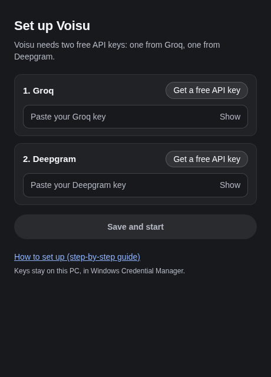
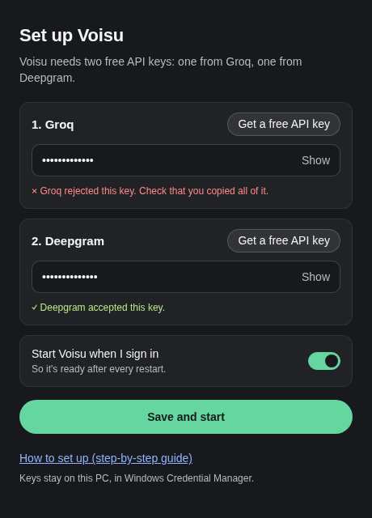
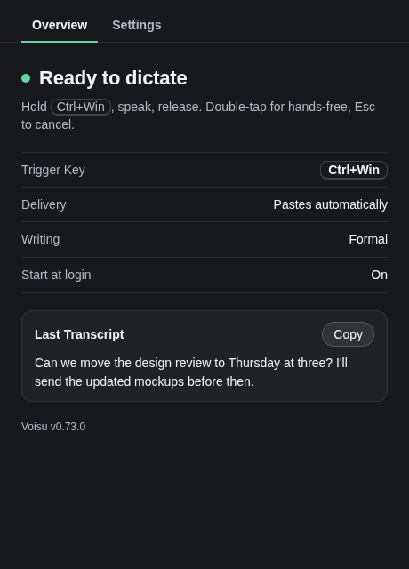
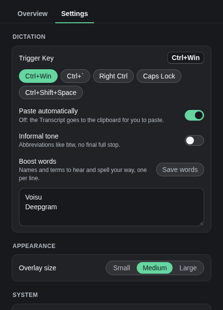
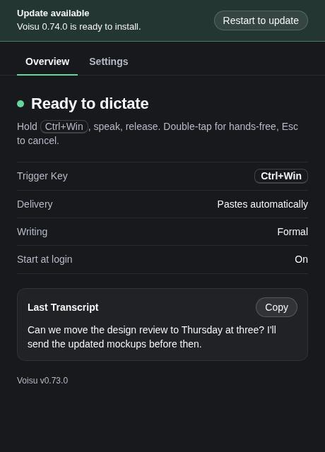

Set up Voisu on Windows
Five minutes, start to finish. You install Voisu, paste two free API keys, and hold Ctrl Win to dictate anywhere you type.
1. Install Voisu
-
Download the installer.
Run it. The installer isn't code-signed yet, so SmartScreen may warn you. Choose More info, then Run anyway. Voisu installs for your user only; no admin rights needed.
The setup screen opens. It asks for two keys, one from Groq and one from Deepgram. You'll see it only until both are saved.

2. Get your Groq key
On the 1. Groq card, choose Get a free API key. Your browser opens the Groq console.
Sign in or sign up (Google or email works).
On API Keys, choose Create API Key, give it any name (for example
voisu), and create it.Copy the key now. It starts with
gsk_, and Groq shows it only once.Back in Voisu, paste it into the Groq box. Show lets you check what you pasted.
3. Get your Deepgram key
On the 2. Deepgram card, choose Get a free API key. Your browser opens the Deepgram console.
Sign in or sign up. New accounts get free credit.
Open API Keys and choose Create a New API Key. Any name and the default permissions are fine.
Copy the key and paste it into the Deepgram box in Voisu.
Both providers have free allowances that cover everyday dictation; check their sites for current limits. Voisu adds no charge of its own.
4. Save and start
Leave Start Voisu when I sign in on so Voisu is ready after every restart. Switch it off if you'd rather open Voisu yourself.
Choose Save and start. Voisu checks each key with its provider. This takes a second or two.
If a key is wrong, a red line under it says so. Copy the key again (no spaces at the ends) and paste it over the old one.
When both pass, Voisu says You're set and opens the Overview.

Your keys stay on your PC. They're stored in Windows Credential Manager and sent only to the provider they belong to. Voisu never shows a saved key again.
5. Dictate
Click into any text box: a chat, an email, a document.
Hold Ctrl Win and speak. The capsule at the bottom of the screen shows your voice.
Release. Your words are pasted where you were typing.
For long dictation, double-tap the Trigger Key for hands-free, then press it once more to finish. Esc cancels.

Voisu lives in the tray and, with Start at login on, starts with Windows. Close the window any time; Settings… in the tray menu reopens it.
Settings
The Settings tab holds everything you can change:
- Trigger Key: the key you hold to dictate.
- Paste automatically: off puts the Transcript on your clipboard instead.
- Informal tone: abbreviations like btw and no final full stop, for chat.
- Boost words: names and terms Voisu should hear and spell your way. Voisu is there to begin with.
- Overlay size, Start at login, and API keys (choose Replace to paste a new one).

Updates
When a new version is ready, a banner appears at the top of the window, above the tabs: Update available. Choose Restart to update; Voisu installs it and opens again. The tray menu offers the same.

If something's wrong
- The Overview says “Voisu needs a restart”. Windows stopped delivering the Trigger Key to Voisu. Choose Quit Voisu in the tray and open it again.
- “Last dictation failed”. The reason is shown under it. A provider rejecting your key means it was revoked or ran out of credit: replace it in Settings → API keys.
- Nothing gets pasted. Your words are kept: copy them from the Overview. Troubleshooting covers apps that block pasting.